拥有一个自己的小机器人不是超酷的么😎
本部分将从0开始介绍一个qq机器人的制作以及部署到服务器。
0.环境一览
开发环境：Windows11
python虚拟环境版本：3.10.9
nonebot cli版本：1.2.6
文本编辑器：VSCode
服务器环境：华为云 2核2G|系统盘40GB|峰值宽带3M|宝塔Linux面板8.0.0.1
Ubuntu版本：22.04.2 LTS (GNU/Linux 5.15.0-76-generic x86_64)
1.NoneBot，启动！
选择的聊天机器人框架是NoneBot2，官方使用文档在此：概览 | NoneBot
脚手架nb-cli
先在自己选择存放机器人的目录下打开vscode
推荐在虚拟环境下进行机器人的开发，这里先安装pipx
打开vscode终端，依次输入以下两行命令
|
|
如果出现一些提示账户环境变量这样的WARNING，请关注，具体怎么调整环境变量另行搜索。
安装完成之后，关闭当前vscode窗口，重启vscode，虚拟环境生效。
重启之后，新建终端，在终端中输入以下命令安装脚手架
|
|
如果出现无法找到命令的错误提示。1.检查环境变量；2.重启VSCode；如果仍然不行：3.重启计算机，还是不行：4.找一个高手帮你debug
安装成功之后使用这个命令：
|
|
如果能返回脚手架版本信息，则代表安装成功
创建项目
使用手脚架创建项目：
|
|
该指令之后会一一系列询问帮助我们创建项目：
|
|
之后脚手架会帮我们自动创建并引入所需要的依赖包
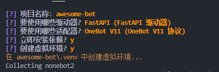
最后选择安装内置插件echo，一个简单的复读插件用于初期测试机器人是否正常运行。
|
|
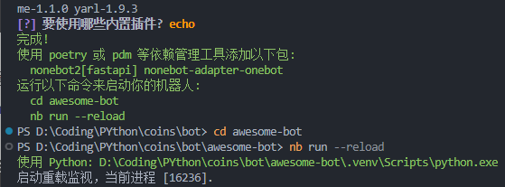
接下来按照提示run一下项目就行
|
|
现在run一下只是初始化，run成功之后ctrl+C终止进程，我们来到下一步编辑配置。
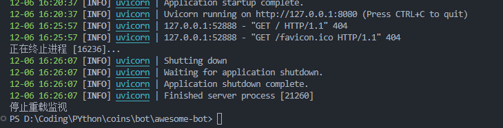
接下来的对机器人的构建都要在项目文件下，方便起见我们可以重新打开文件夹，使根目录是我们的awsome-bot
如果之前虚拟环境激活成功的话，进入这个项目目录下会自动进入本项目的虚拟环境中，就像这样：
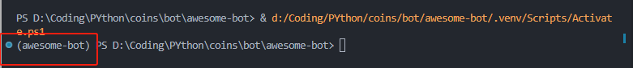
有框框内显示的这个括号代表我们在本项目的虚拟环境下哩。
如果没有成功进入，可以试试在终端输入这个命令：
|
|
（报错找不到路径的话就在自己的文件夹下找找这个activate脚本到底在哪里qwq
或者直接输入完整到activate脚本的路径名（从盘目录开始
或者找一个高手帮你debug
编辑配置
脚手架已经为我们自动创建了配置文件.env.prod
我们编辑它：
|
|
其中，HOST必须为127.0.0.1(localhost)，POST选择一个不被占用的限制端口即可，尽量不要使用8080,80,22,443这种热门端口
安装go-cqhttp插件
go-cqhttp使我们用来运行bot机器人的插件，可以从nonebot商店获取安装，这里记录交互式安装的过程，其他方式可以参考nonebot文档获取商店内容 | NoneBot
|
|
按交互提示输入插件名： nonebot-plugin-gocqhttp
或者直接一句nb plugin install nonebot-plugin-gocqhttp
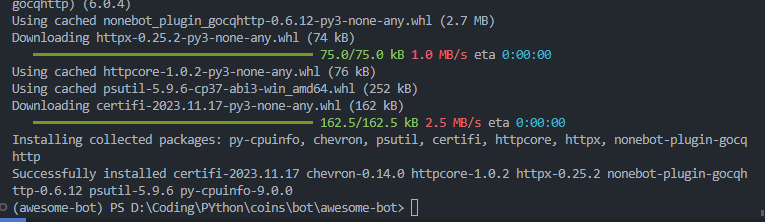
登录机器人
go-cqhttp插件安装完成之后，我们再nb run一下，激活插件的图形化界面。
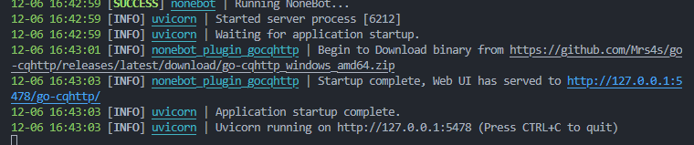
复制这个网站到浏览器，或者按住Ctrl点击这步中的网址跳转到默认浏览器
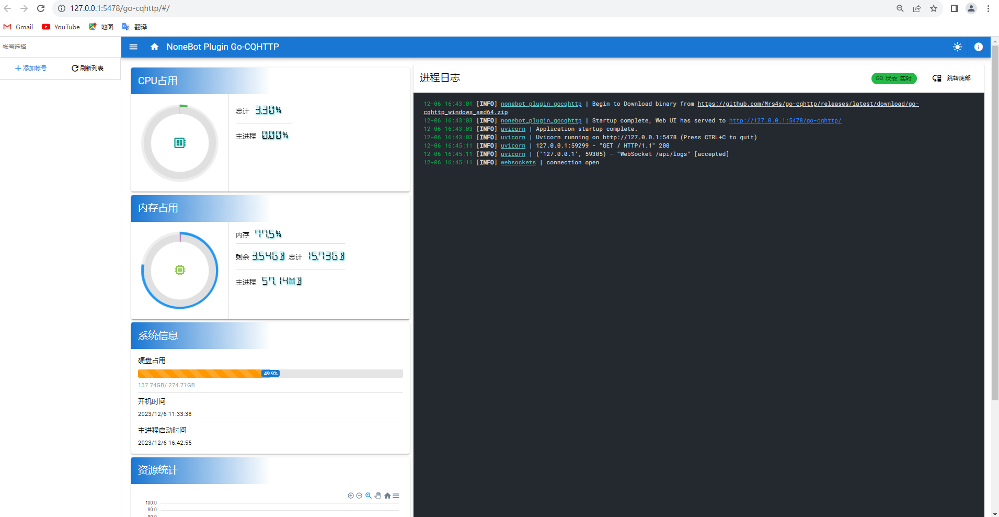
我们点击左侧上方的添加账号，填入要用作机器人的qq号，密码留空，登录设备类型选择Android Watch点击提交
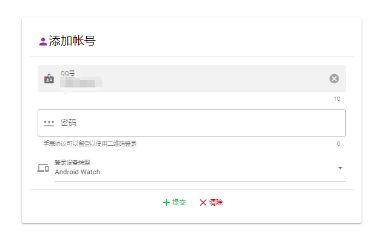
在进程这里点击启动
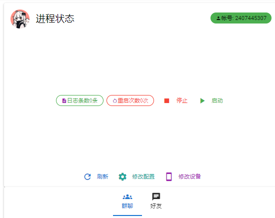
接下来在手机上扫描出现的二维码登录即可
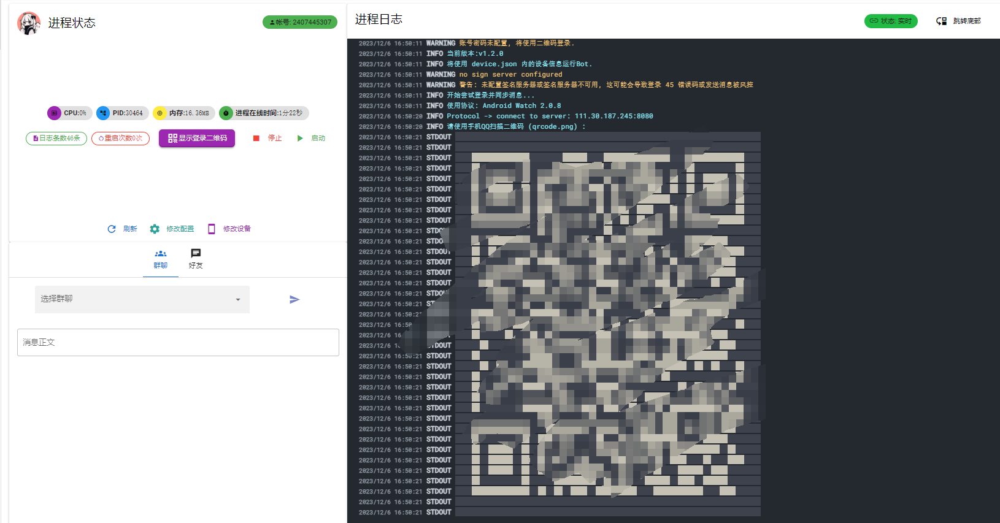
如果出现当前协议不支持二维码登录这样的错误提示，可以先ctrl+c终止，然后在目录的./accounts/机器人的qq号/device.json中检查下方这一项是否是2，若不是，改为2，然后重新登录即可。
|
|
登录成功之后我们对这个机器人qq私聊发送复读消息（因为前面设置的命令起始字符是空的，所以直接echo即可，如果起始设置是"/“那就要写成”/echo xxx"
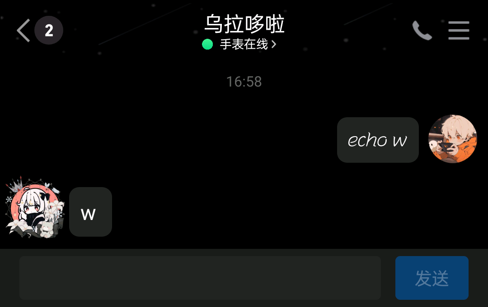
若成功复读表明机器人部署成功。
2.编写插件
官方文档为我们提供了一个关于天气的响应，建议可以先写一下这个插件试水。
这里介绍了前期的准备插件编写准备 | NoneBot
创建目录
我们先在根目录下创建./awesome-bot/plugins目录，之后我们的插件都会在这个plugins目录下编写。
接下来在./pyproject.toml中添加plugin_dirs内容
|
|
如果不小心忽略了这步import导致直接添加插件出错，可以试试把错误的文件删了，重新设置好之后重新打开项目文件
创建插件
接下来，使用交互式命令创建插件：
|
|
这时候awesome_bot/plugins目录下多了一个weather文件夹。
项目树像这样(展示项目树：tree /f)：
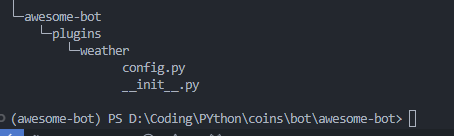
功能编写
请参考：
这些部分简单介绍了这个weather插件，请一定试过这个水再写其他的((
建议：在尝试实现如爬虫等的功能时，请在其他地方调试好python代码再粘贴到插件中，注意数据的type等问题，关于如何爬虫可以参考一些爬虫教学博客((懒))
本篇的示例awesome-bot脱敏处理之后开源至github
小机器人dodola的代码脱敏之后已经开源上传到本人的github上，仓库地址：
|
|
dodola小机器人实现的功能参考仓库中的readme.md，此处不再赘述。
3.部署到服务器
DOCKER部署
nonebot2的脚手架可以帮我们快速使用docker部署，具体操作参考：部署 | NoneBot
docker可以帮助我们配置所有的开发环境使用的依赖。
直接部署
如果不是很会用docker（比如我，我们也可以直接上传到服务器后再配置虚拟环境，进行机器人的部署
初始化部署
这里使用的是宝塔面板+XShell远程桌面辅助我们配置部署
登录宝塔之后，点击左侧文件，在根目录文件下新建一个文件夹用于存放我们的机器人
在命令行中cd到这个文件夹下，给nonebot2机器人配置在linux下的环境（和window下类似
依次使用以下命令准备一些依赖：
|
|
在当前目录下(用来存放机器人的目录下)，命令行输入：
|
|
根据脚手架的引导创建项目（参考前文部分的初始化设置
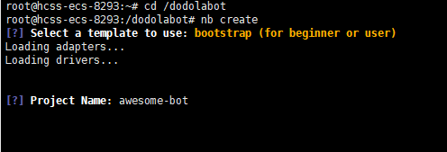
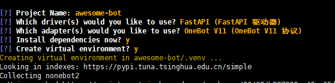
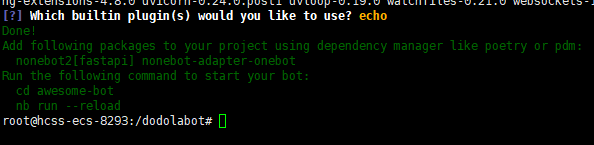
按照提示run一下，然后Ctrl+C退出：
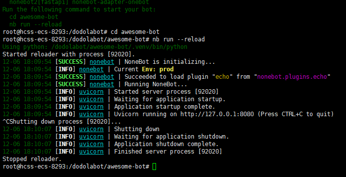
然后我们修改配置文件.env.prod：
|
|
然后安装nonebot-plugin-gocqhttp插件
|
|
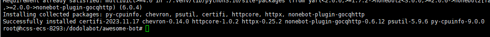
然后再run一下
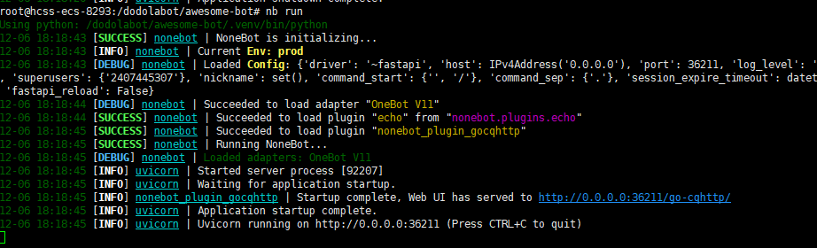
然后打开这个网址（注意把这个0.0.0.0换成自己的服务器ip并把这个端口号从安全组开放出来，进行正常的扫码登录
这时候碰到的意外是：网络复杂拒绝登录。
没关系，这一步我们只是创建一下accounts及其文件罢了，我们可以这样处理这个问题：
在机器人项目的这个目录下./accounts/机器人qq号上传我们在本地测试环境下的有效登录的token文件：session.token（本地目录地址是一样的
然后重新启动一下机器人，应该就能正常访问了（可以测试一下复读功能
上传插件
经过前面的配置，我们获得了一个在linux下的机器人，接下来我们可以利用宝塔面板上传整个我们本地测试完的已经写完的插件：
在机器人项目的目录下上传整个我们在本地写的包含plugins文件夹的awesome-bot文件夹，并像之前那样修改pyproject.toml里的plugin _dirs。重新运行即可使用我们写的插件了。
导入虚拟环境配置
如果是使用docker，那虚拟环境这块理论上不用我们操心，不过既然是直接部署，我们本地有的编程环境这个初始环境不一定有，这时候我们就要再配置一下虚拟环境中的依赖了。
我们先进入我们项目的虚拟环境：
|
|
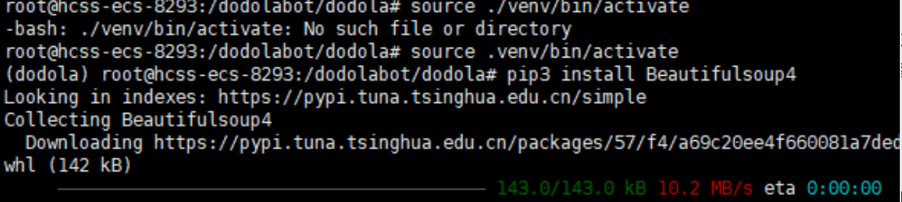
然后在虚拟环境下安装我们需要的依赖就行
退出虚拟环境：
|
|
之后我们启动机器人，就能正常运行代码了。
后台挂起
使用nohup命令挂起我们的命令，nohup的语法是：nohup 执行的命令 &
|
|
想要取消挂起的话，可以使用ps -ef |grep 端口号查看当前后台进程的pid，然后使用kill pid来解放这个进程。
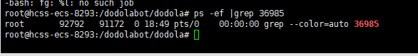